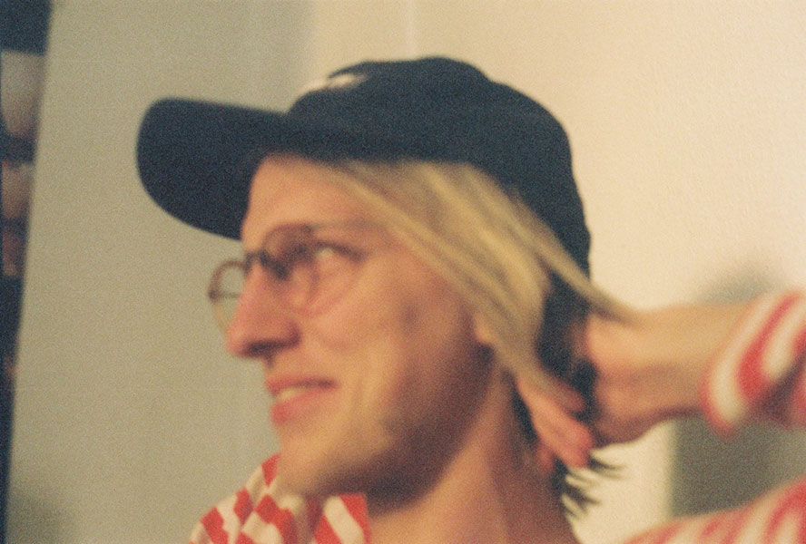

Resumé
Here are some of my more professional achievements.
I've worked for big and small. Good and bad. Mostly good. Big names as Nike, Adidas, Mercedes, SMART, Ferrero, Kolding School of Design, Sparekassen Thy/Kronjylland but I really enjoy working on small projects as well.
Work
Most of my recent work are things I did as HOPE/GLORY.
See my ongoing projects. And here are some references: Dansk Dynamit, Jonas Edvard, Maiko Gubler, Super Schwarz, Torsten Mosumgaard Keramik and many others…
Press
- 2011 ComOn, "Udvikler-konkurrence gør Rejseplanen mere intelligent" (article)
- 2011 TV2 Beep, "De klæder Rejseplanen på til fremtiden" (article)
- 2011 Midttraffik "Rejseplanen Klædt på til fremtiden" (article)
- 2011 Sydtraffik, "Rejseplanen Klædt på til fremtiden" (article)
- 2011 Rejseplanen Service Design Competition, Winner (presentation)
- 2010 Journalisten, "Her er fremtidens 38 nye medietalenter" (article)
- 2010 Announced 'Young Danish Media Talent', New Media Days (article)
Work experience
- 2010 - Present Hope/Glory, front-end developer
- 2010 Moved to Berlin, Germany
- 2009 - Present Rough, freelance
- 2009 - Present Alive Festival, everything
- 2008 GrafiskHus, developer
- 2007 - Present Dansk Dynamit, everything
- 2007 Photographer Knud E Jensen, intern
- 2007 Thisted Gymnasium, German & society studies
- 2006 GrafiskHus, intern
